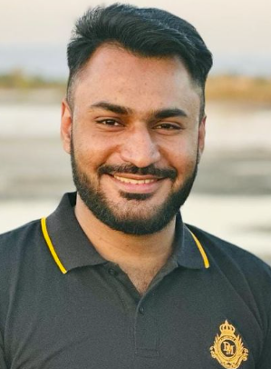

Muhammad Musa Mir

Summary
An experienced Web developer with hands on developing different web developement projects using HTML, CSS, JS and other tools. Continuously working on polishing my full stack developement skills to become a very good in demand web developer.
Education
- M.IT (Virtual Univeristy of Pakistan year 2018-2020)
- B.Sc (Punjab University year 2015-2017)
- I.CS (F.G Inter College year (2013-2015)
Work Experience
- Web Developer at Comtac (2 years)
- IT help desk at Generic solutions (1 year)
- Front Help Desk officer Paradigm Solutions (1 year)
Skills
- HTML, CSS, JAVA Script, React , Mjongo DB
- MS Office
- AWS Cloud infrastructures
- Typing speed at 60 WPM
- Great Communication skills (English , Urdu , Swenska )
Refrences
Available on demand
My Hobbies
Contact me